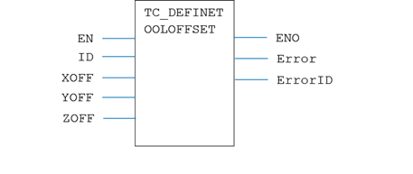
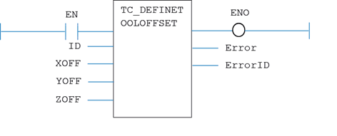

Motion Function
Issues a new TOOL_OFFSET definition request for the identity specified by ‘ID’.
|
EN : BOOL; |
TRUE enables the function |
|
ID : USINT; |
Identification number for the defined tool offset (0 – 31) |
|
XOFF : LREAL; |
Offset in the x axis from the world origin to the user origin |
|
YOFF : LREAL; |
Offset in the y axis from the world origin to the user origin |
|
ZOFF : LREAL; |
Offset in the z axis from the world origin to the user origin |
|
ENO : BOOL; |
TRUE if function is enabled |
|
Error : BOOL; |
TRUE if a program error is detected |
|
ErrorID : UINT; |
Returned error number |
When the EN input is TRUE, the function block applies the TOOL_OFFSET command to the identity indicated by ID. The offsets are applied to the identity, but are not selected until the TC_SELECTTOOLOFFSET is executed.
A programming error, such as parameter out of range, will set the Error output and return an error ID number. For the Error ID reference, see the Trio Programming error list.
MyTC_DefineToolOffset(EN, ID, XOFF, YOFF, ZOFF);
ENO := MyTC_DefineToolOffset.ENO;
Error := MyTC_DefineToolOffset.Error;
ErrorID := MyTC_DefineToolOffset.ErrorID;

